ClinicusMed · Dossiê Clinicus — Padrão de Excelência
A faringe é um canal muscular disposto verticalmente, na frente da coluna vertebral e atrás das cavidades nasais, da cavidade bucal e da laringe. Continua-se para baixo com o esôfago.
A faringe é chamada de "encruzilhada aerodigestiva" — é o único ponto do corpo onde o caminho do ar (das fossas nasais até a laringe/traqueia) e o caminho do alimento (da boca até o esôfago) se CRUZAM fisicamente. É exatamente por essa sobreposição que engasgos acontecem: na deglução, a epiglote precisa "fechar a porta" da laringe bem na hora certa para o bolo alimentar não entrar na via aérea.
É um órgão ímpar, mediano, simétrico, que se estende da base externa do crânio até a borda inferior de C6-C7. Mede 13-14 cm de comprimento e 4,5-5 cm de diâmetro transversal. Participa da deglutição, respiração, fonação e audição.
| Divisão | Sinônimos |
|---|---|
| Superior | Nasal, rinofaringe, epifaringe, nasofaringe |
| Média | Bucal, mesofaringe, orofaringe |
| Inferior | Laríngea, hipofaringe, laringofaringe |
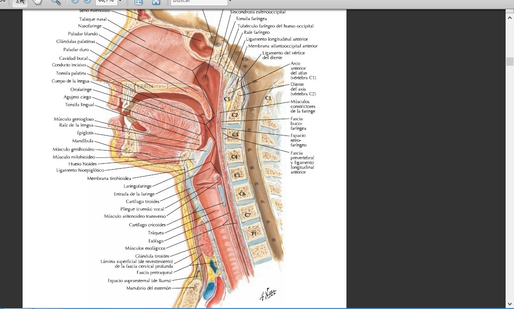
A parede da faringe é formada por 3 túnicas:
| Túnica | Componente |
|---|---|
| Média | Fascia faringobasilar (armação fibrosa) |
| Externa | Músculos constritores e elevadores |
| Interna | Revestimento mucoso (medial à fascia faringobasilar) + fascia perifaríngea (lateral aos músculos) |
São músculos estriados, voluntários, bilaterais — de cada lado há 3 constritores e 2 elevadores (+ 1 elevador ímpar/medial, o palatofaríngeo, geralmente contado junto ao grupo elevador).
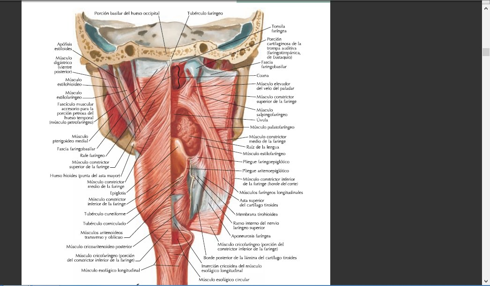
Ficam na superfície externa da fascia faringobasilar.
| Músculo | Inserções |
|---|---|
| Constritor superior | Mais superior e profundo, quadrilátero. Tubérculo faríngeo (acima/mediano); borda posterior da lâmina medial do processo pterigoide (porção pterigofaríngea); rafe pterigomandibular (porção bucofaríngea); linha milo-hioidea posterior da mandíbula (porção milofaríngea); musculatura intrínseca da língua (porção glossofaríngea) |
| Constritor médio | Centrado no hioide: asta menor + lig. estilo-hioideo (porção condrofaríngea) e asta maior (porção ceratofaríngea). Pode descer até o lig. tiro-hioideo lateral e a asta superior da cartilagem tireoide |
| Constritor inferior | Trapezoidal, parte inferior da faringe. Face lateral da cartilagem tireoide (porção tirofaríngea) + borda inferior da cricoide (porção cricofaríngea) — encaixado entre o cricotireóideo (na frente) e o cricoaritenóideo posterior (atrás) |
| Músculo | Inserções / Trajeto |
|---|---|
| Estilofaríngeo | Base do processo estiloide → desce entre o constritor superior e o médio, abre-se em leque até a fascia faringobasilar, epiglote, cartilagem tireoide e cricoide |
| Salpingofaríngeo | Borda inferior da cartilagem da tuba auditiva → desce formando a prega salpingofaríngea → termina na fascia faringobasilar. Eleva a faringe e abre a tuba auditiva durante a deglutição |
| Palatofaríngeo | Véu palatino → desce formando o arco palatofaríngeo, junta-se ao estilofaríngeo na cartilagem tireoide |
São espaços ao nível das inserções dos músculos constritores, por onde passam estruturas vasculonervosas importantes.
| Hiato | Localização | Conteúdo |
|---|---|---|
| Superior | Entre constritor superior e médio | N. glossofaríngeo (IX), m. estilofaríngeo, lig. estilo-hioideo |
| Médio | Entre constritor médio e inferior | Ramo interno do n. laríngeo superior + a./v. laríngea superior |
| Inferior | Nas inserções de origem do constritor inferior | Ramo externo do n. laríngeo superior (passa superficialmente) |
| Parede | Descrição |
|---|---|
| Anterior | Corresponde às coanas (orifícios posteriores das cavidades nasais) |
| Superior | Fórnix faríngeo (abóbada), abaixo do esfenoide — contém a tonsila faríngea (adenoide) |
| Inferior | Face superior do véu do paladar — controla a comunicação com a orofaringe |
| Posterior | Vertical, com ilhotas linfoides |
| Lateral | Orifício faríngeo da tuba auditiva (entre as pregas salpingopalatina e salpingofaríngea) + recesso faríngeo (fosseta de Rosenmüller) |
Entre o véu do paladar (acima) e o osso hioide (abaixo).
| Parede | Descrição |
|---|---|
| Anterior | Istmo das fauces + raiz da língua. Entre as pregas glossoepiglóticas (medial e laterais): as valéculas epiglóticas |
| Posterior | Mais lisa que a da nasofaringe |
| Lateral | Arco palatofaríngeo + canais faringolaríngeos (entre a raiz da língua/epiglote e a parede lateral da faringe) |
Do hioide até a borda inferior da cricoide/constritor inferior (C6). Forma de funil que termina no esôfago.
| Elemento | Descrição |
|---|---|
| Entrada da laringe | Ovalada, ladeada pelos recessos piriformes; demarcada pelas pregas ariepiglóticas e incisura interaritenóidea |
| Orifício inferior | Onde o músculo esofágico estriado continua o músculo faríngeo estriado — o terço superior do esôfago ainda é estriado |
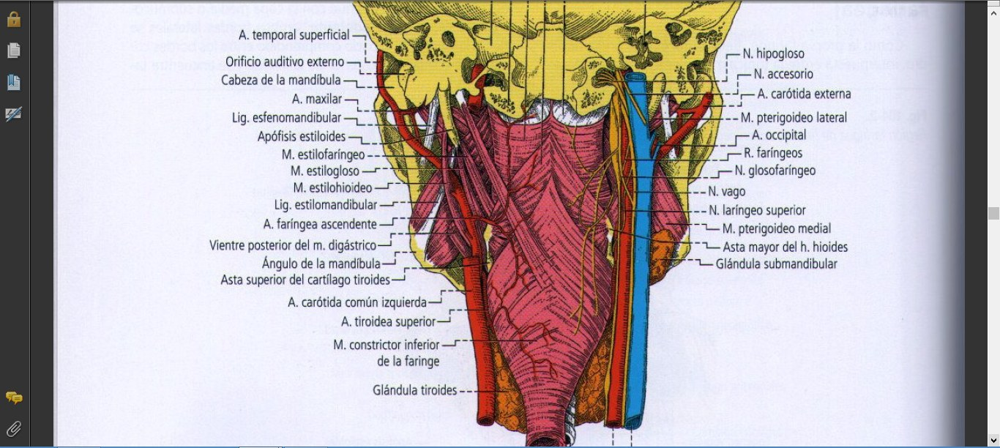
| Sistema | Origem |
|---|---|
| Artérias | Ramos da carótida externa — principalmente a a. faríngea ascendente (mais volumosa); ramos menores da tireóidea superior, facial e maxilar |
| Nervos sensitivos | N. vago (n. laríngeos superior e inferior); n. trigêmeo (n. faríngeo de Bock, para a nasofaringe); n. glossofaríngeo (arco palatofaríngeo) |
| Nervos motores | Plexo faríngeo — formado por glossofaríngeo (IX) + vago (X) + acessório (XI) |
| Nervos vegetativos | Plexo faríngeo, com ramos do gânglio cervical superior do simpático |
Órgão musculomembranoso que vai da faringe até o estômago, conduzindo o bolo alimentar.
| Item | Descrição |
|---|---|
| Limites | Borda inferior de C6 (continuação da laringofaringe) até o cárdia |
| Comprimento total | 25-30 cm |
| Porções | Cervical (5 cm) · Torácica (16-20 cm) · Diafragmática (1 cm) · Abdominal (3 cm) |
O músculo esofágico tem uma transição histológica única no tubo digestivo: terço superior = músculo estriado esquelético (continuação direta do constritor inferior da faringe — por isso é voluntário no início da deglutição); terço médio = misto (estriado + liso); terço inferior = totalmente liso/involuntário. É a única víscera do tubo digestivo que começa "voluntária" e termina "involuntária".
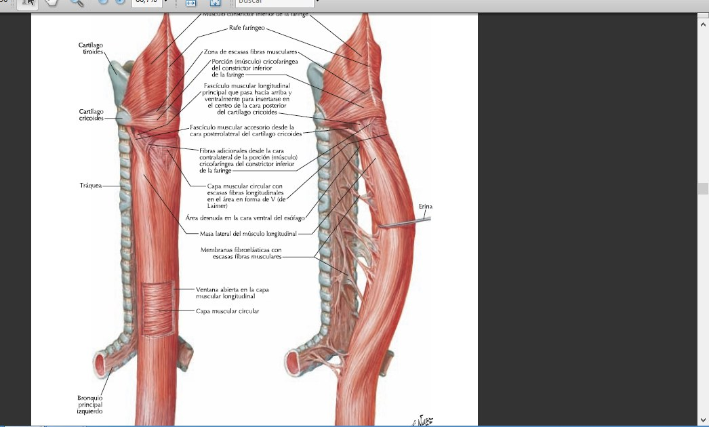
Camadas da parede: adventícia (tecido conjuntivo) → músculo esofágico (camada longitudinal externa vigorosa + camada circular interna delgada) → submucosa → mucosa (epitélio pavimentoso estratificado + glândulas seromucosas).
| Porção | Extensão | Relações-chave |
|---|---|---|
| Cervical | C6 até a borda superior de T2 | Atrás: músculos + fáscia prevertebral. Adiante: face posterior da traqueia (desvia-se levemente à esquerda desde C7). À direita: traqueia ultrapassa a borda direita + n. laríngeo recorrente direito. À esquerda: a. carótida comum esquerda próxima à borda. Bilateralmente: tronco simpático cervical; a. tireóidea inferior cruza horizontalmente |
| Torácica | T2 até T9 | Retrotraqueal, passa entre as duas cúpulas pleurais. Separado da pleura esquerda pelo arco do ducto torácico. A partir de T4, o arco aórtico cruza à esquerda da traqueia/esôfago. Artérias intercostais posteriores direitas passam atrás do esôfago. Veias hemiázigos e hemiázigos acessória cruzam sua face posterior |
| Diafragmática | ~1 cm, travessia do diafragma | Hiato esofágico |
| Abdominal | ~3 cm | Peritônio cobre apenas a face anterior. Borda direita: vestíbulo da transcavidade dos epíplons. Borda esquerda: continua-se com a curvatura gástrica maior (incisura do cárdia). O nervo vago anterior (esquerdo) corre aplicado à face anterior |
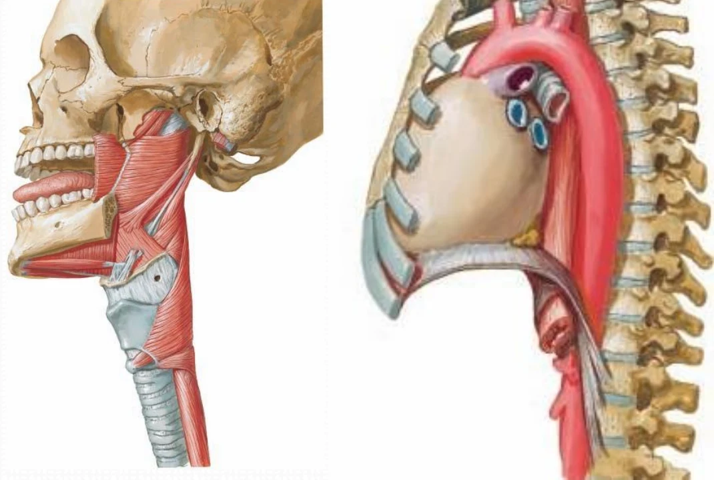
| Item | Descrição |
|---|---|
| Origem | Borda inferior do músculo constritor inferior da faringe, diante da borda inferior da cartilagem cricoide (C6-C7). O ponto de origem sobe ou desce cerca de uma vértebra conforme a posição da cabeça e durante os movimentos da deglutição |
| Trajeto | Região prevertebral (cervical) → região posterior do mediastino superior → entre a 4.ª e 5.ª vértebras torácicas afasta-se da coluna → desvia-se à direita, dando lugar à aorta → em T7 desvia-se à esquerda → atravessa o diafragma |
| Terminação | Óstio do cárdia, na linha mediana, entre T10 e T11 |
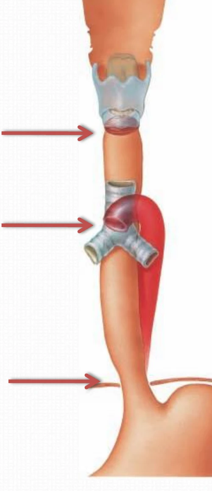
| Estado | Forma |
|---|---|
| Vazio | Cavidade estreita em fenda transversal, de 5 a 12 mm, com as paredes em contato |
| Porção mais inferior (vazio) | Forma estrelada, pelas pregas da mucosa |
| Distendido | Forma cilíndrica |
| Parte terminal | Forma de funil |
Os 3 estreitamentos (cricoide, torácico/broncoaórtico e frênico/diafragmático) são os pontos onde corpos estranhos e estenoses cáusticas tendem a se instalar.
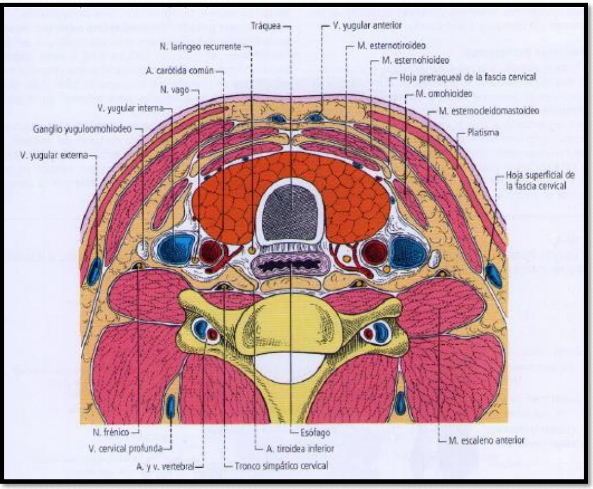
| Face | Relações |
|---|---|
| Atrás | Coluna vertebral, músculos pré-vertebrais e folheto pré-vertebral. Entre o esôfago e o folheto pré-vertebral fica o espaço retroesofágico (retrovisceral de Henke), um plano de deslizamento |
| Adiante | Traqueia, glândulas tireoide e paratireoides, nervo laríngeo recorrente esquerdo e artéria tireóidea inferior |
| Lateral direita | Traqueia |
| Lateral esquerda | Artéria carótida comum esquerda, tronco simpático cervical, artéria e veias tireóideas inferiores e nervo laríngeo recorrente |
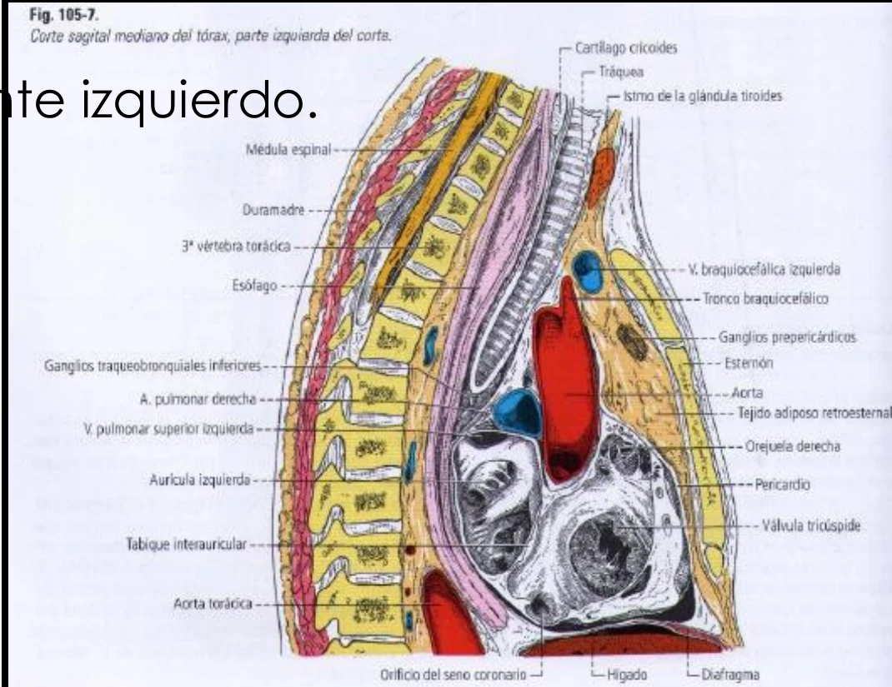
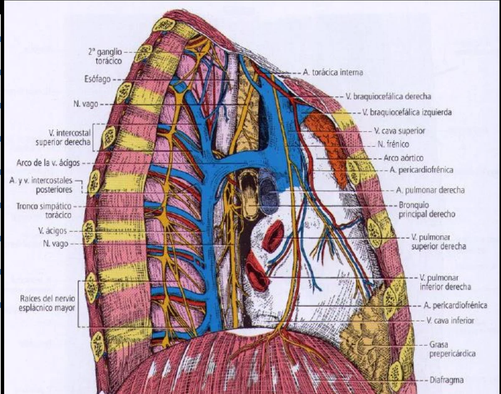
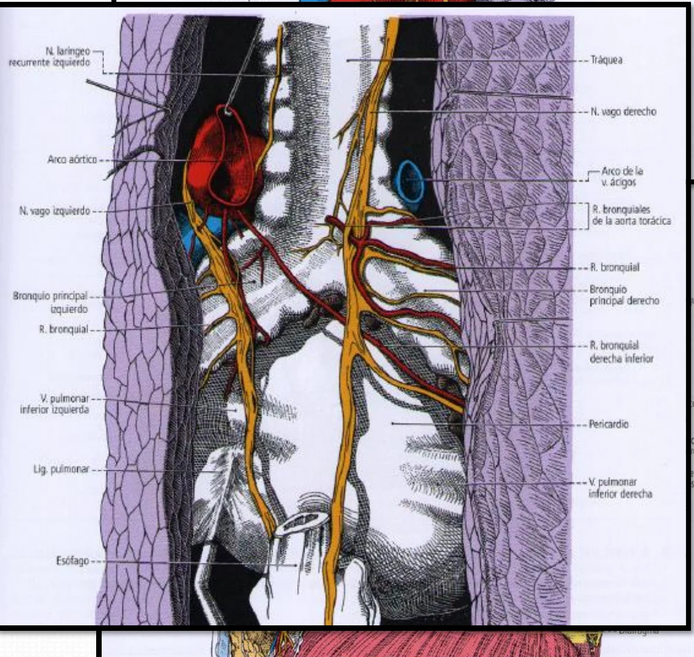
| Face | Relações |
|---|---|
| Posterior | Coluna vertebral, plano celuloso, músculos pré-vertebrais (até a 2.ª ou 3.ª vértebra), ducto torácico, artérias intercostais posteriores direitas, veias hemiázigos e hemiázigos acessória, aorta descendente, nervo vago direito e troncos simpáticos |
| Anterior (acima) | Traqueia, brônquio esquerdo, nervo laríngeo recorrente esquerdo e linfonodos |
| Anterior (abaixo) | Pericárdio, átrio esquerdo, seio oblíquo do pericárdio e nervo vago esquerdo |
| Direita | Traqueia, pleura e lobo superior do pulmão, arco da veia ázigos, nervo vago direito e recesso vertebromediastinal |
| Esquerda | Artéria carótida comum esquerda, artéria subclávia esquerda, nervo vago esquerdo, aorta, nervo laríngeo recorrente esquerdo, pleura e pulmão esquerdo e recesso interaorticoesofágico |
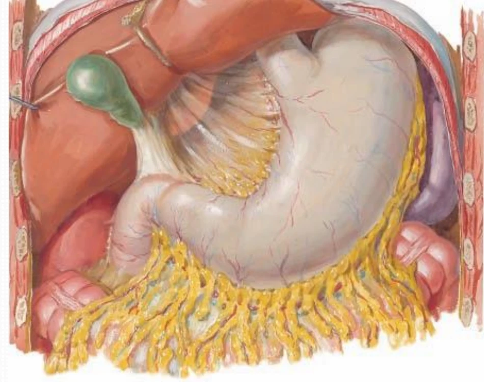
| Segmento | Descrição |
|---|---|
| Hiato esofágico | Constitui o esfíncter funcional externo do esôfago. O nervo vago direito fica na face posterior e o esquerdo na face anterior |
| Anterior (abdominal) | Peritônio, lobo esquerdo do fígado e nervo vago esquerdo |
| Direita | Transcavidade dos epíplons |
| Posterior | Aorta e pilar direito do diafragma |
| Esquerda | Estômago |
| Segmento | Artéria |
|---|---|
| Esofágicas superiores | A. tireóidea inferior |
| Esofágicas médias | Ramos diretos da aorta |
| Esofágicas inferiores | A. frênica inferior + a. gástrica esquerda |
| Sistema nervoso | Via |
|---|---|
| Parassimpático | Nervo laríngeo recorrente esquerdo (no segmento cervical/torácico alto) + troncos vagais (mais distalmente) |
| Simpático | Via dos nervos vasculares (acompanha as artérias) |
| Esôfago abdominal | Recebe também ramos diretos dos nervos esplâncnicos |
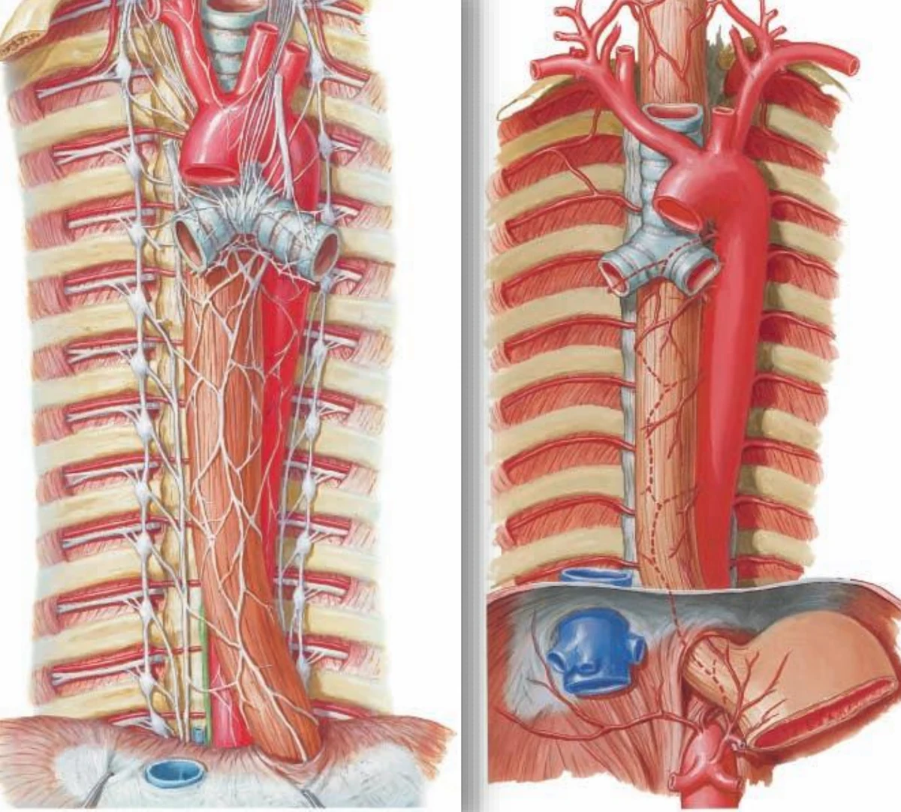
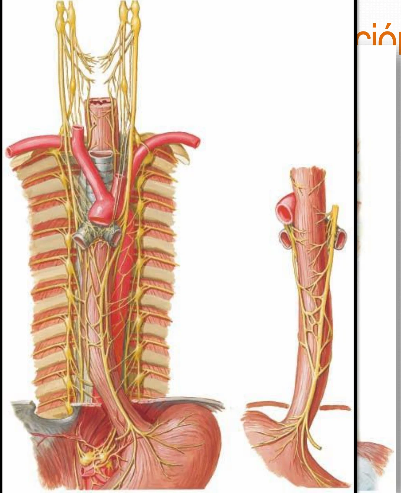
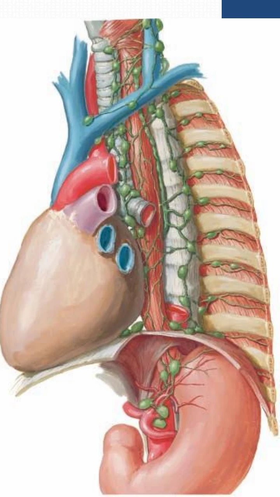
| Item | Descrição |
|---|---|
| Vascularização | Artérias esofágicas (ver tabela acima por segmento) |
| Inervação | Sistema nervoso autônomo (vagos e troncos simpáticos) |
| Origem dos linfáticos | Plexo submucoso e plexo intramuscular |
| Drenagem | Linfonodos cervicais, mediastinais e abdominais |
Um caso clássico de raciocínio anatomo-clínico: localizar, pela história e pelos sintomas associados, em qual ponto do trajeto faringoesofágico está o problema — mecânico, neurológico ou por compressão extrínseca.
A Clinicus selecionou este conteúdo para complementar seu estudo. Não substitui a leitura do resumo — o resumo ensina, o vídeo reforça.
Carregando recomendações...
O sistema guarda, no seu navegador, quais cards você já sabe bem e quais precisam voltar mais cedo — cada vez que você avalia um card, ele recalcula quando ele deve voltar.
10 questões, do mais básico ao mais puxado. Escolhe uma alternativa, depois clica em "Ver comentário completo" — vale a pena ler até quando você acerta, porque o comentário explica cada alternativa, não só a certa.